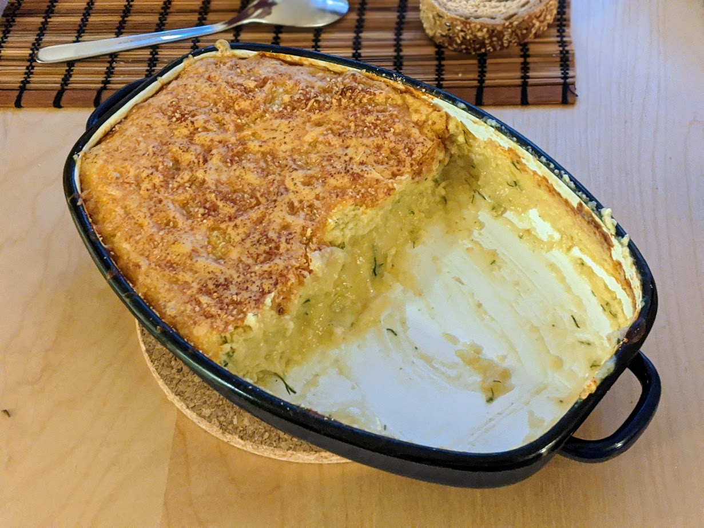

..@..♦.D.

|
Présentation 
|
Blog
|
Recettes
|

Version gratinée (cf. remarque ci-dessous)
Pour 4 personnes :
Remarque : comme d'autres purées, on peut y ajouter quelques œufs ou jaunes d'œuf une fois tiédie, bien mélanger, mettre dans un plat à four beurré, parsemer de gruyère ou de chapelure, et passer au four (10 minutes à 250°C) pour faire un gratin. Mieux vaut ne pas sauter l'étape 5 dans ce cas.